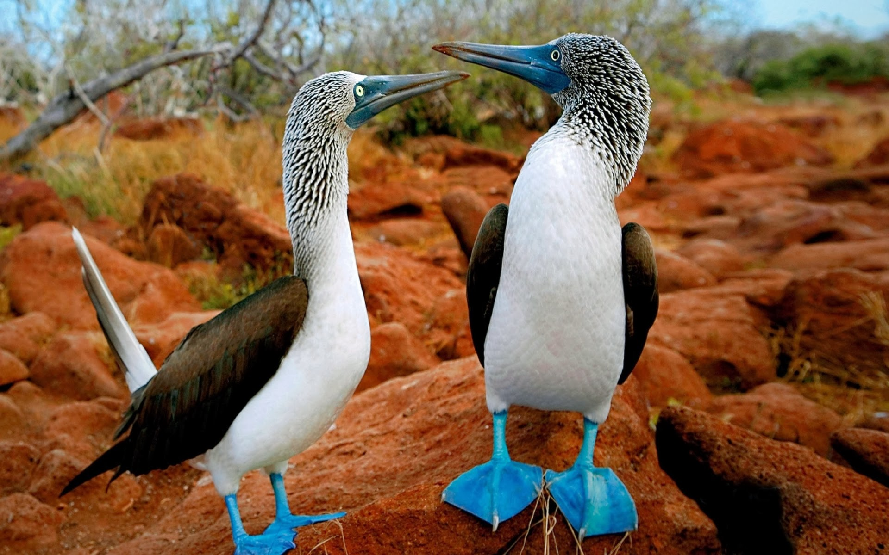

Friday, October the 30th, 2015
back to: title, date or indexes
Given the seeming ubiquity of vampires in contemporary popular culture, I am surprised that nobody has thought to produce an ornithologically-themed vampire TV series—especially when I learn, from this morning's Tweet of the Day on BBC Radio Four, that there is, in the Galapagos Islands, a vampire finch which sucks the blood of blue-footed boobies. I am always looking for an excuse to show a picture of the latter bird, so here are a couple of them.
